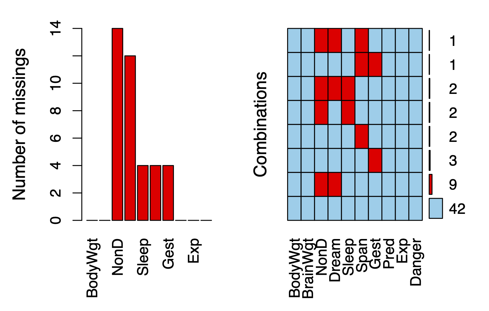
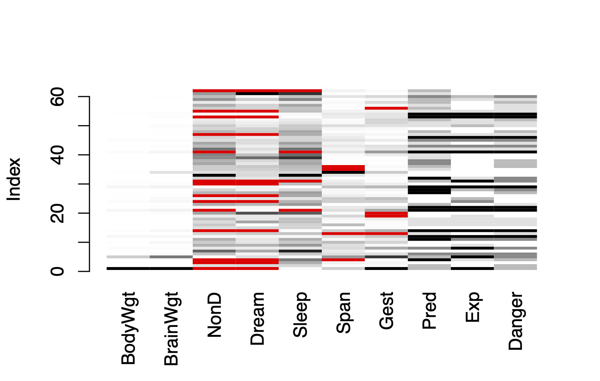
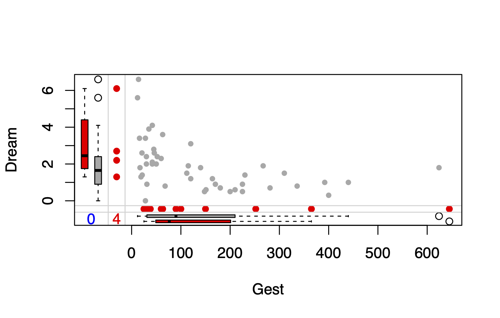
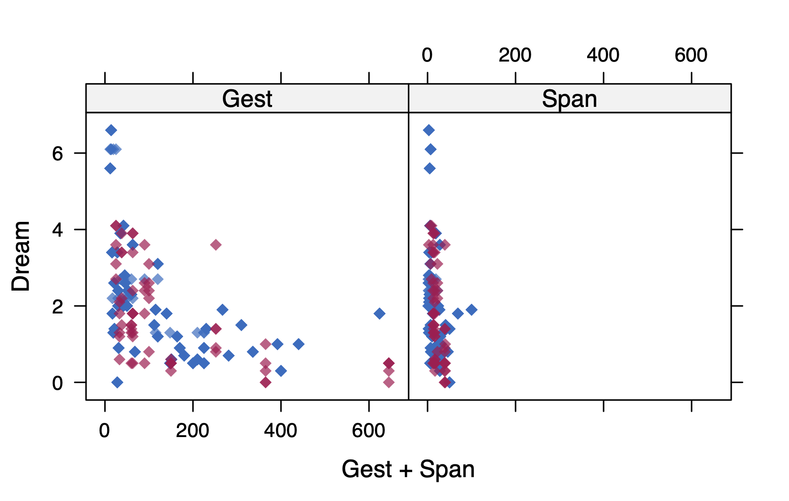
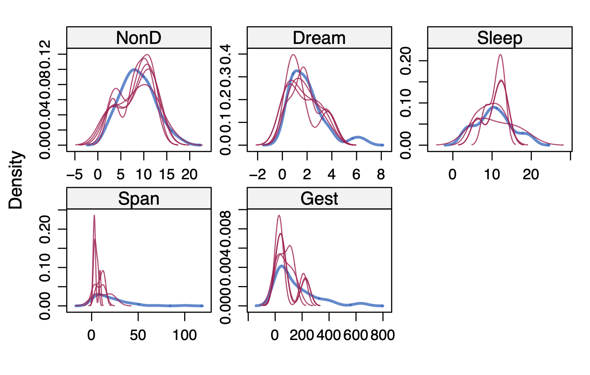
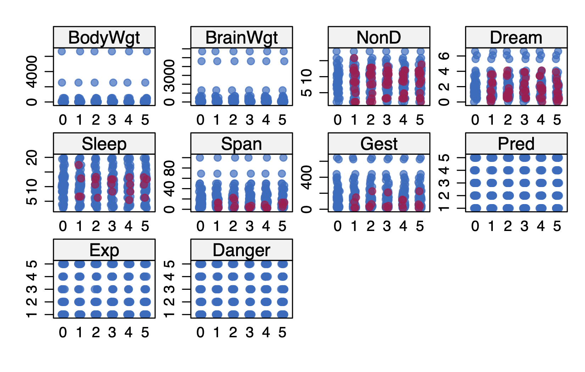

flowchart LR
A[概览] --> B(异常值识别处理)
B --> C{缺失值识别与处理}
C --> D[重复值识别与处理]
D --> E[标准化变量和取值]
正如前文所述，数据清洗（Data Cleaning）和数据准备（Data Preparation）工作通常会占掉整个数据分析过程70%到80%的时间，这一点基本被很多学者所认可，因此，应该清楚地认识到数据清洗工作的重要性。然而，很多学者，特别是还处在科研早期阶段的硕博士研究生，十分热衷于跑模型（Run model）。拿到数据既不详细摸索数据结构，也不观察变量分布情况，简单地描述一下数据后，就开始跑各种回归，目的只在发现统计显著的回归系数。这是一个不太好的研究习惯。
何谓数据清洗？目前其实没有统一的定义，但是在不同的学科领域中，数据清洗的目标和内容基本是明确一致的，那就是识别、修改或删除不正确和不完整的数据，识别和删除重复信息和无关数据，以及按一定的标准统一数据格式、缺失值和拼写错误，规范数据结构，从而更好地为下一步分析工作服务。结合Microsoft、Amazon以及 (Ron 2008) 的观点，本书将常见的数据清洗步骤归纳如下：
整洁数据（Tidy Data）是由Posit公司（之前名称为Rstudio）的首席科学家Hadley Wickham提出的，初衷是为了简化数据清洗的流程，提高数据清洗效率。Wickham (2014) 认为Tidy Data更易于操作、建模和可视化，并且应该具备三种特征：
打眼一看，你可能觉得上面三句话说的是废话，心里想着大家不是都是这么建数据库的吗？其实不然，比如可以看下面的例子。
如 表 3.1 是日常工作和研究中非常常见的建数据库方式，但是这样的方式对于统计分析来说并不友好。比如当你想要知道每一科考试得分的最大值最小值时，你通常需要对数学、语文、英语重复三次同样的操作。
| 姓名 | 数学 | 语文 | 英语 |
|---|---|---|---|
| 张三 | 80 | 90 | 95 |
| 李四 | 88 | 95 | 97 |
再比如，当有多次考试的成绩需要记录时，很多人会选择 表 3.2 这样的方式，但是这样的结构在数据分析时会更不友好。
| 姓名 | 第一次 | 第二次 | ||||
|---|---|---|---|---|---|---|
| 数学 | 语文 | 英语 | 数学 | 语文 | 英语 | |
| 张三 | 80 | 90 | 95 | 85 | 92 | 97 |
| 李四 | 88 | 95 | 97 | 87 | 90 | 98 |
符合Tidy Data要求的建立数据库方式应该如 表 3.3 所示，在这种结构下，结合Group by等操作，会给数据分析带来很大的便利。
| 姓名 | 考试 | 学科 | 得分 |
|---|---|---|---|
| 张三 | 第一次模拟考 | 数学 | 80 |
| 李四 | 第一次模拟考 | 数学 | 88 |
| 张三 | 第一次模拟考 | 语文 | 90 |
| 李四 | 第一次模拟考 | 语文 | 95 |
| 张三 | 第一次模拟考 | 英语 | 95 |
| 李四 | 第一次模拟考 | 英语 | 97 |
| 张三 | 第二次模拟考 | 数学 | 85 |
| 李四 | 第二次模拟考 | 数学 | 87 |
| 张三 | 第二次模拟考 | 语文 | 92 |
| 李四 | 第二次模拟考 | 语文 | 90 |
| 张三 | 第二次模拟考 | 英语 | 97 |
| 李四 | 第二次模拟考 | 英语 | 98 |
关于Tidy Data的内容还有很多，具体可以详细参考 Wickham (2014) 的文章，这里就不进行搬运工作了。在设计数据库的时候，只需要记住不要把数据展示形式当成数据库的结构形式就可以。
由于异常值处理、重复值处理、规范变量类型及取值、识别并处理结构错误的内容相对比较简单，在本节中将不会详细举例说明。以下就异常值及缺失值的处理流程予以详细说明。一般情况下，数据清洗可以按照 图 3.1 所示流程进行。
flowchart LR
A[概览] --> B(异常值识别处理)
B --> C{缺失值识别与处理}
C --> D[重复值识别与处理]
D --> E[标准化变量和取值]
数据清洗的第一步就是需要对数据库有一个整体的把握，如有多少个变量、多少条记录、变量类型如何、取值是什么等。在规范的研究项目（如注册的药物/器械临床试验）中，这些信息会记录在Codebook中随同数据一并交给统计师，通过翻阅Codebook就可以清楚地了解以上这些信息。这就是为何本书在 Section 2.2.4 中强调整理和制作Codebook的重要性。然而，很多时候，对于大部分的问卷调查数据而言，很少见到有研究者严格按照类似临床试验的要求建立和管理数据库的，以及对于从医院、互联网平台等处获取的数据而言，都不会事先提供这些信息，因此拿到数据库的第一步就是去了解这些信息。
一般我将这一步称为数据库的概览（Overview），在R中通常使用str()函数或者glimpse()函数可以大致对数据结构有一个初步了解，更为推荐的工具和方法可参见 Section 4.2.2 ，本节仅给出简单的示例，具体如下：
data(mtcars)
dplyr::glimpse(mtcars[1:5, 1:6])Rows: 5
Columns: 6
$ mpg <dbl> 21.0, 21.0, 22.8, 21.4, 18.7
$ cyl <dbl> 6, 6, 4, 6, 8
$ disp <dbl> 160, 160, 108, 258, 360
$ hp <dbl> 110, 110, 93, 110, 175
$ drat <dbl> 3.90, 3.90, 3.85, 3.08, 3.15
$ wt <dbl> 2.620, 2.875, 2.320, 3.215, 3.440严格来说，这一步工作属于数据库管理的内容范畴，不应该在数据清洗阶段。但是，考虑到现在的研究，很多时候拿到的就是非常自然和原始的数据，这些工作也需要在数据清洗的时候进行。规范变量类型和取值的具体含义是指，数值型变量在数据库中的类型应该为Int或者Float，如年龄或者收入等指标；字符变量在数据库应该为String，如家庭住址或者出院诊断等指标；日期就应该Date，时间就应该是Time；另有一类较为特殊的是分类变量，如性别或学历等，可以用0、1、2等数字编码后，以Int类型存储，亦可直接以String类型存储为“男”和“女”等，两种方法各有利弊，根据研究习惯选择即可。
异常值处理根据变量的类型不同采取的方法有所区别。对于数值型变量1 采用直方图（Histogram）、箱式图（Boxplot）或者小提琴图（Violin plot）可直观的了解异常值的分布情况；对于分类变量采用频数频率表或交叉表（Crosstable）可清晰地了解异常值情况。关于作图和作表方法可详见本书后续章节 。
关于数值型变量异常值的判定标准，大致可以分为以下三种方法：
关于数值型变量异常值的处理，如果是问卷数据，通常需要首先核对原始数据，排除因录入错误导致的数据异常，若排除此种原因，可采取截尾方法，剔除异常值。
由于这部分内容较多，因此单独用一节来介绍，本部分主要参考 van Buuren and Groothuis-Oudshoorn (2011)。Missing Value的处理也是非常重要的一个环节，因此规范的缺失数据的处理直接影响着研究结果的稳健性和真实性，也是研究能够Reproductive的重要保障。通常，处理缺失值的步骤如下：
在识别缺失数据之前，先来了解一下缺失数据的分类，它直接关系到处理缺失值方式的选择。
例如：
大部分处理缺失数据的方法都假定数据是MCAR或MAR。此时，你可以忽略缺失数据的生成机制。当数据是NMAR时，想对它进行恰当地分析比较困难，既要对感兴趣的关系进行建模，还要对缺失值的生成机制进行建模。
此次只用R来演示软件操作过程，Stata及SAS等其他软件可自行查阅相关文档。以下研究主要使用R的VIM包，以及该包中自带的sleep数据集进行演示。
sleep数据集简介
睡眠变量包含睡眠中做梦时长（Dream）、不做梦的时长（NonD）以及它们的和（Sleep）。体质变量包含体重（BodyWgt，单位为千克）、脑重（BrainWgt，单位为克）、寿命（Span，单位为年）和妊娠期（Gest，单位为天）。生态学变量包含物种被捕食的程度（Pred）、睡眠时暴露的程度（Exp）和面临的总危险度（Danger）。
1) 以表格形式进行探索
主要使用的is.na()和complete.cases()函数。
# 加载VIM包
library(VIM)
# 加载数据集
data(sleep, package = "VIM")
# 列出没有缺失值的行
sleep[complete.cases(sleep[, 1:5]), 1:5] BodyWgt BrainWgt NonD Dream Sleep
2 1.000 6.60 6.3 2.0 8.3
5 2547.000 4603.00 2.1 1.8 3.9
6 10.550 179.50 9.1 0.7 9.8
7 0.023 0.30 15.8 3.9 19.7
8 160.000 169.00 5.2 1.0 6.2
9 3.300 25.60 10.9 3.6 14.5
10 52.160 440.00 8.3 1.4 9.7
11 0.425 6.40 11.0 1.5 12.5
12 465.000 423.00 3.2 0.7 3.9
13 0.550 2.40 7.6 2.7 10.3
15 0.075 1.20 6.3 2.1 8.4
16 3.000 25.00 8.6 0.0 8.6
17 0.785 3.50 6.6 4.1 10.7
18 0.200 5.00 9.5 1.2 10.7
19 1.410 17.50 4.8 1.3 6.1
20 60.000 81.00 12.0 6.1 18.1
22 27.660 115.00 3.3 0.5 3.8
23 0.120 1.00 11.0 3.4 14.4
25 85.000 325.00 4.7 1.5 6.2
27 0.101 4.00 10.4 3.4 13.8
28 1.040 5.50 7.4 0.8 8.2
29 521.000 655.00 2.1 0.8 2.9
32 0.005 0.14 7.7 1.4 9.1
33 0.010 0.25 17.9 2.0 19.9
34 62.000 1320.00 6.1 1.9 8.0
35 0.122 3.00 8.2 2.4 10.6
36 1.350 8.10 8.4 2.8 11.2
37 0.023 0.40 11.9 1.3 13.2
38 0.048 0.33 10.8 2.0 12.8
39 1.700 6.30 13.8 5.6 19.4
40 3.500 10.80 14.3 3.1 17.4
42 0.480 15.50 15.2 1.8 17.0
43 10.000 115.00 10.0 0.9 10.9
44 1.620 11.40 11.9 1.8 13.7
45 192.000 180.00 6.5 1.9 8.4
46 2.500 12.10 7.5 0.9 8.4
48 0.280 1.90 10.6 2.6 13.2
49 4.235 50.40 7.4 2.4 9.8
50 6.800 179.00 8.4 1.2 9.6
51 0.750 12.30 5.7 0.9 6.6
52 3.600 21.00 4.9 0.5 5.4
54 55.500 175.00 3.2 0.6 3.8
56 0.060 1.00 8.1 2.2 10.3
57 0.900 2.60 11.0 2.3 13.3
58 2.000 12.30 4.9 0.5 5.4
59 0.104 2.50 13.2 2.6 15.8
60 4.190 58.00 9.7 0.6 10.3
61 3.500 3.90 12.8 6.6 19.4#列出有一个或多个缺失值的行
sleep[!complete.cases(sleep[, 1:5]), 1:5] BodyWgt BrainWgt NonD Dream Sleep
1 6654.000 5712.0 NA NA 3.3
3 3.385 44.5 NA NA 12.5
4 0.920 5.7 NA NA 16.5
14 187.100 419.0 NA NA 3.1
21 529.000 680.0 NA 0.3 NA
24 207.000 406.0 NA NA 12.0
26 36.330 119.5 NA NA 13.0
30 100.000 157.0 NA NA 10.8
31 35.000 56.0 NA NA NA
41 250.000 490.0 NA 1.0 NA
47 4.288 39.2 NA NA 12.5
53 14.830 98.2 NA NA 2.6
55 1.400 12.5 NA NA 11.0
62 4.050 17.0 NA NA NA从结果可以看出，完整数据集中有62条observation，其中只有42条不含缺失值，20条含一个或多个缺失值。由于逻辑值TRUE和FALSE分别等价于数值1和0，可用sum()和mean()函数来获取关于缺失数据的有用信息。如：
sum(is.na(sleep$Dream))[1] 12mean(is.na(sleep$Dream))[1] 0.1935484mean(!complete.cases(sleep))[1] 0.3225806结果表明变量Dream有12个缺失值，19%的实例在此变量上有缺失值。另外，数据集中32%的实例包含一个或多个缺失值。另外一种方法是，采用mice包中的md.pattern()函数来生成缺失值矩阵，如下：
library(mice)
md.pattern(sleep[, 1:5], plot = FALSE) BodyWgt BrainWgt Sleep Dream NonD
48 1 1 1 1 1 0
10 1 1 1 0 0 2
2 1 1 0 1 0 2
2 1 1 0 0 0 3
0 0 4 12 14 30结果中，最右侧列显示的是缺失的variable数量，0表示无缺失；最左侧列显示对应的observation数量，如第一行显示，有42条observation在BodyWgt等10个variable中均无缺失；第二行显示，Dream和NonD共2个变量同时有缺失的observation有9条。那么，数据集的20条缺失observation中，共包含缺失值(42 × 0) + (2 × 1) + … + (1 × 3) = 38个。
2) 以图形探索缺失数据
虽然表格的输出也很简洁，但是图形的输出会更直观，此时可以采用VIM包中的aggr()和matrixplot()函数。
aggr(sleep, prop = FALSE,
numbers = TRUE,
labels = TRUE, )
如 图 3.2，左侧的红色条图分别显示了所有variable的缺失值数量，可以清楚的看出Gest变量有4个缺失值等。右侧的图中，红色代表缺失，可以看出无任何缺失的observation共有42条，同时了缺失NonD和Dream的observation共有9条。
matrixplot(sleep)
Click in a column to sort by the corresponding variable.
To regain use of the VIM GUI and the R console, click outside the plot region.
matrixplot()函数可生成展示每个实例数据的图形。此处，数值型数据被重新转换到[0, 1]区间，并用灰度来表示大小：浅色表示值小，深色表示值大。默认缺失值为红色。 图 3.3，横轴展示了全部的variable，纵轴显示了全部observation，从图中可以清楚的了解缺失值的分布情况，默认是按照第一个变量BodyWgt从小到大排序过。
通过Fig.2的矩阵图中，可以看出某些变量的缺失值模式是否与其他变量的真实值有关联。此图中可以看到，无缺失值的睡眠变量（Dream、NonD和Sleep）对应着较小的体重（BodyWgt）或脑重（BrainWgt）。此时，可以采用VIM包中的marginplot()函数可生成一幅散点图，在图形边界展示两个变量的缺失值信息，并观察变量之间的关系。
marginplot(sleep[c("Gest", "Dream")],
col = c("darkgrey", "red", "blue"),
pch = c(20))
图 3.4，共显示了两部分信息，（a）散点图（b）边界显示缺失信息，具体为：
从 图 3.4 可以看出，Dream与Gest成负相关关系，并且，Gest的缺失值对应更大的Dream值，即缺失妊娠期数据时动物的做梦时长一般更长。
图形展示了缺失变量之间可能的相关关系，进一步可用指示变量替代数据集中的数据（1表示缺失，0表示存在），这样生成的矩阵有时称作影子矩阵。求这些指示变量间和它们与初始（可观测）变量间的相关性，有助于观察哪些变量常一起缺失，以及分析变量“缺失”与其他变量间的关系。具体如下：
# 管道函数包
library(magrittr)
# 将是否缺失的逻辑变量转换为0和1变量的数据框形式
a <- abs(is.na(sleep[, 1:5])) %>%
as.data.frame()
b <- apply(a, 2, sum) %>%
.[which(. != 0)] %>%
names()
# 提取出缺失数据
c <- subset(a, select = b)
# 对缺失数据进行相关分析
cor(c, y = NULL) NonD Dream Sleep
NonD 1.0000000 0.9071147 0.4862645
Dream 0.9071147 1.0000000 0.2037014
Sleep 0.4862645 0.2037014 1.0000000此时，你可以看到Dream和NonD常常一起缺失（r = 0.91）。相对可能性较小的是Sleep和NonD一起缺失（r = 0.49），以及Sleep和Dream（r = 0.20）
在对缺失数据进行识别和探索后，下一步就是对缺失数据进行填补，但是在进行下一步之前，需要前面的工作弄清楚几个问题，以便选择合理的缺失值处理方式：
缺失值的处理通常有以下4种方法，其中前三种处理方式比较常用。除非特别必要，一般情况下较少会选择填补法。另外需要强调的是，若采取删除缺失值的处理方式，通常需要对删除缺失前的数据库和删除后的数据库进行比较，主要采用描述性统计方法检验关键的人口学特征是否存在差异。若不存在差异方可说明采用删除缺失值的方式是可取的，否则就会改变样本的代表性。
不予处理：如果有一小部分数据（如小于10%）随机分布在整个数据集中（MCAR），那么你可以分析数据完整的实例，这样仍可以得到可靠且有效的结果。
删除变量（列）：如果缺失数据集中在几个相对不太重要的变量上，那么你可以删除这些变量，然后再进行正常的数据分析.
删除观测（行）：在完整的数据分析中，只有每个变量都包含了有效数据值的观测才会保留下来做进一步的分析。实际上，这样会导致包含一个或多个缺失值的任意一行都会被删除，因此常称作行删除法（listwise）、个案删除（case-wise）或剔除。大部分流行的统计软件包都默认采用行删除法来处理缺失值。如果你平时留心观察过，不管是在Stata或者SAS中，进行crostable、t-test、anova或者regression分析的时候，默认都是剔除了包含缺失值的记录的。 但是，行删除法是有一个前提假定的，即数据是完全随机缺失（MCAR）（即完整的观测只是全数据集的一个随机子样本）。如果不满足此条件，那么删除行是会产生有偏的结果。
数据填补：根据研究设计不同，填补的方法有多种，如clinical trial中对于重复观察结果采用的末次观测结转(LOCF:Last observation carried forward)，以及平时常用的简单插补法（即用某个值（如均值、中位数或众数）来替换变量中的缺失值）。这里只介绍在面对复杂的缺失值问题时，常用的多重插补法(MI,Multiple imputation)，此处使用前面提到的R语言的mise包，其他软件也有类似的函数或者包。
原理：
MI是将从一个包含缺失值的数据集中生成一组完整的数据集（通常是3到10个）。每个模拟数据集中，缺失数据将用蒙特卡洛方法来填补。缺失值的插补通过Gibbs抽样完成。每个包含缺失值的变量都默认可通过数据集中的其他变量预测得来，于是这些预测方程便可用来预测缺失数据的有效值。该过程不断迭代直到所有的缺失值都收敛为止。对于每个变量，用户可以选择预测模型的形式（称为基本插补法）和待选入的变量。默认地，预测的均值用来替换连续型变量中的缺失数据，而Logistic或多元Logistic回归则分别用来替换二值目标变量（两水平因子）或多值变量（多于两水平的因子）。其他基本插补法包括贝叶斯线性回归、判别分析、两水平正态插补和从观测值中随机抽样。用户也可以选择自己独有的方法。
语法：
函数mice()首先从一个包含缺失数据的数据框开始，然后返回一个包含多个（默认为5个）完整数据集的对象。每个完整数据集都是通过对原始数据框中的缺失数据进行插补而生成的。由于插补有随机的成分，因此每个完整数据集都略有不同。然后，with()函数可依次对每个完整数据集应用统计模型（如线性模型或广义线性模型），最后，pool()函数将这些单独的分析结果整合为一组结果。
library(mice)
imp <- mice(df, m,
seed = 1234, method = "pmm")
sleep_im <- complete(pooled, action = 3) method为默认插补方式，pmm为默认方式预测均值匹配（Predictive mean matching）, 还有一些其他methods插补方法:
使用这些插补方法对数据有严格的要求，比如贝叶斯线性回归等前三个模型都需要数据符合numeric格式，而pmm、cart、rf任意格式都行。
使用以上模型遇见的问题有：
pmm相当于某一指标的平均值作为插补，会出现插补值重复的问题。
cart以及rf是挑选某指标中最大分类的那个数字，是指标中的某一个数字，未按照规律。
要使用norm.predict，必须先对数据进行格式转换，这个过程中会出现一些错误。
实例：
imp <- mice(sleep, seed = 1234, method = "pmm")
iter imp variable
1 1 NonD Dream Sleep Span Gest
1 2 NonD Dream Sleep Span Gest
1 3 NonD Dream Sleep Span Gest
1 4 NonD Dream Sleep Span Gest
1 5 NonD Dream Sleep Span Gest
2 1 NonD Dream Sleep Span Gest
2 2 NonD Dream Sleep Span Gest
2 3 NonD Dream Sleep Span Gest
2 4 NonD Dream Sleep Span Gest
2 5 NonD Dream Sleep Span Gest
3 1 NonD Dream Sleep Span Gest
3 2 NonD Dream Sleep Span Gest
3 3 NonD Dream Sleep Span Gest
3 4 NonD Dream Sleep Span Gest
3 5 NonD Dream Sleep Span Gest
4 1 NonD Dream Sleep Span Gest
4 2 NonD Dream Sleep Span Gest
4 3 NonD Dream Sleep Span Gest
4 4 NonD Dream Sleep Span Gest
4 5 NonD Dream Sleep Span Gest
5 1 NonD Dream Sleep Span Gest
5 2 NonD Dream Sleep Span Gest
5 3 NonD Dream Sleep Span Gest
5 4 NonD Dream Sleep Span Gest
5 5 NonD Dream Sleep Span GestWarning: Number of logged events: 5sleep_im <- complete(imp, action = 1)
#查看填补情况
imp$imp$Dream 1 2 3 4 5
1 0.0 0.5 0.5 0.5 0.3
3 0.5 1.4 1.5 1.5 1.3
4 3.6 4.1 3.1 4.1 2.7
14 0.3 1.0 0.5 0.0 0.0
24 3.6 0.8 1.4 1.4 0.9
26 2.4 0.5 3.9 3.4 1.2
30 2.6 0.8 2.4 2.2 3.1
31 0.6 1.3 1.2 1.8 2.1
47 1.3 1.8 1.8 1.8 3.9
53 0.5 0.5 0.6 0.5 0.3
55 2.6 3.6 2.4 1.8 0.5
62 1.5 3.4 3.9 3.4 2.2检查插补效果：
通过散点图和分布图，检查填补数据的效果，图 3.5 ，红色点表示填补值，蓝色表示非填补值。
library(lattice)
xyplot(imp, Dream ~ Gest + Span,
pch = 18, cex = 1)
densityplot(imp)
stripplot(imp, pch = 20, cex = 1.2)


填补后数据集应用：
通常情况下，填补完成后，通常会进行回归分析，如前所示，MI填补生成了5个填补数据集，此时就会有一个疑问，到底选择哪一个作为最后的完整数据集。mice包提供了一个函数可以很容易的将5个填补数据集分别进行回归，然后将结果合并后返回一个结果。
sleep_im_fit <- with(imp,
lm(Sleep ~ Gest + Span))
modelsummary::modelsummary(sleep_im_fit,
stars = TRUE,
output = "kableExtra")| Model 1 | |
|---|---|
| (Intercept) | 13.174*** |
| (0.732) | |
| Gest | −0.016*** |
| (0.005) | |
| Span | −0.020 |
| (0.035) | |
| + p < 0.1, * p < 0.05, ** p < 0.01, *** p < 0.001 |
处理一般线性回归的lm()函数，其他方法包括广义线性模型glm()函数、广义可加模型gam()，负二项模型nbrm()函数均可实现。
本书中所讲的数值型变量是指根据统计学中的标准划分的计量和计数指标，而非指数据库中存储为Int或者Float类型的变量。↩︎